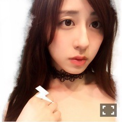
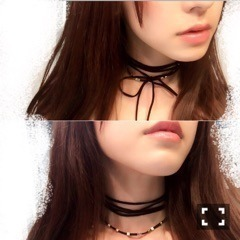

| 2016/05 31 Tue | 斎藤ちはる チョーカー祭りです。首輪じゃないです。私は人間です。(´>∀<｀)ゝ |
ちはるーむへようこそ(｡･o･｡)ﾉ
火傷した所を濡らさないように
ビニール袋縛ってお風呂入ってるんだけど
左手使えないから辛いです。
骨折したことないけど、気持ちが少しわかるような気持ちがしました。辛いですね。
よし！気持ちを切り替えて！！
今夜は勝手にチョーカー祭りだ♡
私の大好きなチョーカー達だよ(﹡ˆ ˆ﹡)
今日首詰まった服着てたから
着替え途中な為チョーカーしか変化がなくて
写真区別つけ難いと思う...ごめんね
1つめ

一番チョーカーが見難いであろう写真を一枚目に持ってくる。
一番最近買った、
EAT ME のレースチョーカーだよ！！
太めのレースが可愛くて一目惚れ。
純奈と買い物行った時に買ったんだけど可愛いって言ってくれた！
純奈のお墨付きゲット。
2つめ
こっちは細めのレースのチョーカー。
よーく見たら、バラ柄なの！
bubblesのものだよ！！
少し前に買ったんだけど、
使い易くてかなり頻繁につけてるよ♪
3つめ
これは高校生のときに買ったものだから
どこのだったか覚えてないんだ(> <)
レザー素材だからクールテイストの服にぴったり！
4つめ
唯一の白チョーカー♪
Lily Brownのだよ！！
上の太めのチョーカーの下にある細い紐のようなものは取り外し可能で、2wayで使えるんだ♡
5つめ

前回のブログにも載せてた
Lily Brownのチョーカー♪！
紐タイプだから、下のように普通に巻くもよし。
上のようにリボンを前で結んで猫ちゃんみたいにするもよし。
お気に入り♡
これで全部！
思ってたより少なかった気がする！( ◦˙ ˙◦ )
街中でチョーカー着けてる人見かけると
「ああ、可愛い！素敵！」ってなる。
メンバーでチョーカー着けてるの見ると
「可愛すぎる！すき！」ってなる。
なんか全人類がチョーカー着けなきゃいけない義務とかにならないかな。ならないけど。
それくらいお気に入り\( ˆoˆ )/
たまに、首輪だ！！！って言われるけど
首輪じゃないからね！！！！
飼われてないからね！！！！
あ、でもまあやが飼うって言ってたな♡
可愛い可愛いまあやなら飼われようかな♡
まーぁやヽ(^0^)ﾉまーぁやヽ(^0^)ﾉ
一実風。
さて、ここで突然アンケート！
多分男女問わずチョーカーって好き嫌いがあるのだと思うけど
強いて選ぶなら、どれが好き？
1つめがいい！
とか
5つめのリボン前で結んでるやつがすき！
とか教えてくだされば
次の握手会で一番多かったやつを着けようかな♡
みんなアンケート待ってるね〜！
Bonsoir！
Ça va？
キーボードにフランス語追加してみた...
フラ語出来るんだと脳に思い込ませる作戦。
斎藤ちはる